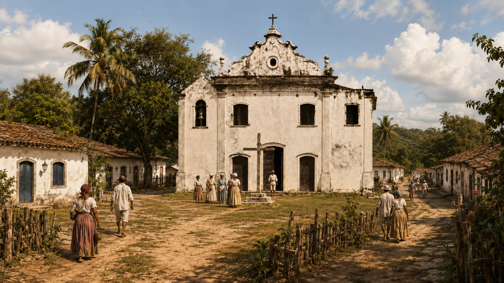
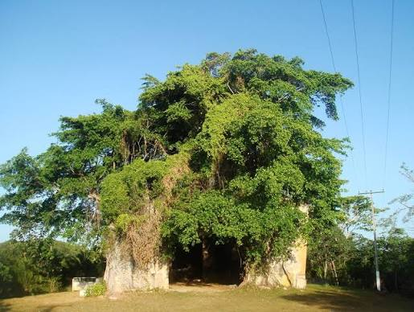
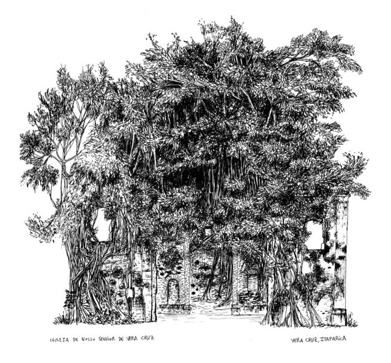
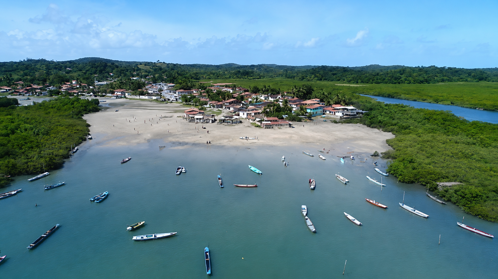
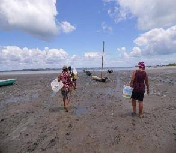
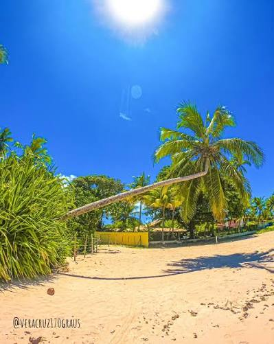

Uma comunidade em que a maré desenha o cotidiano, a pesca atravessa gerações
e as ruínas de uma antiga igreja guardam um dos capítulos mais antigos de Vera Cruz.
Baiacu não é apenas uma paisagem. É um território de memória.
Localizada na contra-costa da Ilha de Itaparica, Baiacu se reconhece como
comunidade tradicional pesqueira. Seu cotidiano reúne mar, manguezal, embarcações,
pesca, mariscagem, agricultura de subsistência, religiosidade e fortes vínculos comunitários.
Estudos sobre a comunidade destacam Baiacu como remanescente da primeira ocupação
portuguesa da ilha, em 1560, e como a mais antiga colônia de pescadores da Ilha de
Itaparica. Mas sua história não começa com os portugueses: os Tupinambás já habitavam
e conheciam profundamente esse território.
01Comunidade pesqueira
A pesca artesanal organiza trabalho, circulação, relações familiares e pertencimento.
02Patrimônio histórico
As ruínas da Igreja de Nosso Senhor da Vera Cruz guardam memórias do século XVI.
03Natureza protegida
Manguezais, remanescentes de Mata Atlântica e espécies marinhas formam um ecossistema precioso.
04Saberes femininos
Mulheres participam da mariscagem, do tratamento, da venda e da circulação do pescado.
Das aldeias à comunidade
A história de Baiacu
A trajetória de Baiacu atravessa a presença Tupinambá, a missão jesuítica,
a formação do povoado de Vera Cruz e a consolidação de uma comunidade voltada para o mar.
No século XVI, jesuítas organizaram, no alto de uma colina, um povoado dedicado
ao Senhor da Vera Cruz. O projeto colonial buscava catequizar os Tupinambás,
habitantes originários da ilha. Nesse núcleo foi erguida a igreja que se tornaria
um dos marcos mais antigos da ocupação portuguesa em Itaparica.
Com o passar do tempo, os moradores deixaram a parte elevada e se aproximaram
das áreas costeiras. Registros locais relacionam o nome Baiacu
à grande quantidade desse peixe encontrada nas águas da região. O antigo povoado
religioso ganhou, então, uma nova centralidade ligada à pesca, às marés e à vida comunitária.
Antes de 1560
Território Tupinambá
Povos originários habitavam a ilha e dominavam conhecimentos sobre águas, pesca e natureza.
1560
Formação do povoado
A missão jesuítica organizou um núcleo sob a invocação do Senhor da Vera Cruz.
1561
A igreja se torna referência
A tradição local associa a conclusão do templo e sua inauguração às festas de 14 de setembro.
Depois
O povoado desce em direção ao mar
A ocupação se aproxima da costa e o nome Baiacu passa a identificar a comunidade.
Séculos seguintes
Pesca como herança histórica
Saberes indígenas, africanos e portugueses se encontram nas técnicas e instrumentos de pesca.
Hoje
Memória, trabalho e resistência
A comunidade segue preservando conhecimentos que conectam terra, mangue e mar.
Reconstituição histórica imaginada
Como poderia ter sido a Vila do Nosso Senhor da Vera Cruz?
Os documentos e as tradições locais registram a formação, em 1560, de um povoado
missionário no alto da colina. A imagem abaixo é uma reconstrução artística criada
para ajudar o visitante a imaginar como poderiam ter sido a igreja, as casas, os
caminhos e a vida ao redor do antigo núcleo, sem apresentá-la como reprodução exata.

Imagem ilustrativaUma possibilidade visual para o povoado fundado em 1560
01A igreja como referência
Em povoados missionários do período, o templo costumava ocupar posição de destaque
e funcionar como ponto religioso, administrativo e simbólico.
02Casas e caminhos simples
É possível imaginar moradias de técnicas e materiais disponíveis na região,
distribuídas ao redor de caminhos de terra e áreas de convivência.
03Água, mata e produção
A escolha da colina relacionava-se à vigilância e à organização do núcleo,
enquanto fontes, roças, mata, pesca e caminhos ligavam o povoado ao território.
04Encontros e conflitos
A vila fazia parte do projeto colonial e missionário. Sua história também envolve
catequese, imposições culturais, resistências indígenas e profundas transformações.
Da antiga vila à comunidade pesqueira
Como o nome Vera Cruz deu lugar ao nome Baiacu?
Os dois nomes pertencem à mesma história, mas representam momentos diferentes
da ocupação do território.
01
O primeiro núcleo colonial
Vera Cruz
A missão organizada pelos jesuítas no século XVI foi dedicada a
Nosso Senhor da Vera Cruz. A igreja tornou-se a principal
referência do povoado e o antigo núcleo passou a ser conhecido como
Povoado ou Vila de Nosso Senhor da Vera Cruz.
O nome religioso fazia referência à cruz de Cristo e permaneceu ligado à
memória da igreja, da freguesia e da formação histórica da localidade.
Séculos depois, essa denominação também contribuiu para a escolha do nome
do município de Vera Cruz.
Vila no alto da colina→Comunidade junto ao mar
02
A nova centralidade costeira
Baiacu
Com o passar do tempo, parte dos moradores se aproximou das áreas costeiras,
onde a pesca, as canoas, as marés e o manguezal passaram a organizar de forma
mais intensa o cotidiano da comunidade.
Registros e narrativas locais relacionam o nome Baiacu à
grande presença desse peixe nas águas da região. Assim, o antigo nome
religioso permaneceu associado à igreja e à história do município, enquanto
Baiacu passou a identificar a comunidade pesqueira formada junto ao mar.
Pedra, fé e raízes
A Igreja de Nosso Senhor da Vera Cruz
Considerada um dos principais atrativos históricos de Baiacu, a Igreja de
Nosso Senhor da Vera Cruz foi erguida no século XVI e teve grande importância
durante o período colonial.
Atualmente, a construção encontra-se em ruínas. Suas antigas paredes foram
envolvidas pelas enormes raízes de uma gameleira que nasceu no interior do templo,
criando uma paisagem singular em que natureza e arquitetura parecem sustentar uma à outra.

Estado atual
A gameleira abraçou as ruínas
1561
Um dos marcos religiosos mais antigos da ilha
A igreja esteve ligada à primeira freguesia da Ilha de Itaparica e ao antigo
povoado do Senhor da Vera Cruz. Em materiais históricos locais, o templo também
é apresentado como uma importante matriz religiosa da região antes da criação
de outras freguesias na Baía de Todos-os-Santos.
Sua história ajuda a explicar por que, séculos depois, o município recuperou
o nome Vera Cruz, preservando na administração municipal a memória do antigo povoado.
Uma revista comemorativa do município registra que, nas celebrações do padroeiro,
moradores subiam à antiga colina no dia 14 de setembro para participar da missa
nas ruínas e seguir em procissão até a igreja menor da comunidade.
Fé, patrimônio e ancestralidade
Um encontro entre diferentes tradições religiosas
A presença da gameleira transformou as ruínas em um espaço de forte valor
histórico, cultural, religioso e simbólico.
✝Memória católica
A igreja permanece ligada à devoção a Nosso Senhor da Vera Cruz e às
celebrações realizadas em 14 de setembro.
♧A gameleira e a ancestralidade
Em tradições de matriz africana, gameleiras podem ser reconhecidas como
árvores sagradas e associadas ao orixá Iroco. Essa relação amplia os
significados atribuídos ao lugar.
◉Cemitério comunitário
Nos fundos da antiga igreja encontra-se um cemitério tradicional,
mantendo o local ligado às memórias familiares e religiosas de Baiacu.
“
São as paredes que sustentam a árvore ou é a árvore que ainda mantém
a antiga igreja de pé?
RegistroA fotografia foi capturada por volta de 1940 pelo pesquisador e fotógrafo Edgar de Cerqueira Falcão para o seu livro Relíquias da Bahia..

Ruínas desenhadasO traço registra a presença da vegetação e os vestígios da arquitetura.
- Fonte: http://everderame.wordpress.com/ruinas-e-outras-igrejas-2010/"

Território pesqueiro
O mar também é caminho, trabalho e memória
Cultura das águas
A pesca artesanal organiza o cotidiano
Em Baiacu, a pesca não é somente uma atividade econômica. Ela envolve
saberes sobre ventos, marés, canais, épocas do pescado, redes, embarcações,
conservação, venda e relações de confiança.
Redes com nomes do pescado
A pesquisa registra redes como tainheira, agulheira, arraieira, paruzeira,
caçoeira e calão, escolhidas conforme o peixe, o período e o local da pescaria.
Pesca feita em grupo
A pesca de rede é descrita pelos moradores como uma prática que fortalece
companheirismo e unidade de trabalho.
Território amplo
Pescadores de Baiacu circulam por diferentes áreas da Baía de Todos-os-Santos,
articulando conhecimentos e rotas que ultrapassam os limites da comunidade.
Artes de pesca registradas em pesquisa
Rede, manzoá e mariscagem
Os estudos de campo mostram que cada técnica combina conhecimento do ambiente,
espécie procurada, período do ano, equipamento e local de pesca.
01Pesca de rede
A principal arte de pesca registrada. Tainheira, caçoeira, rede de arrasto e
calão variam conforme o pescado, a estação e o sítio de pesca.
02Manzoá
Armadilha semifechada utilizada para capturar peixes e crustáceos.
A pesquisa identificou em Baiacu o uso de manzoás de ferro.
03Mariscagem
Realizada conforme o ritmo das marés, com instrumentos artesanais como
baldes, ganchos, colheres e pequenos facões.
Trabalho que move a comunidade
As mulheres da maré
Pesquisas realizadas em Baiacu destacam o papel central das mulheres na
mariscagem, no tratamento do pescado, no catado do siri, na venda e na circulação da produção.
Elas conectam a chegada das canoas aos mercados e clientes. Muitas acumulam
diferentes funções: pescadoras, marisqueiras, tratadoras e vendedoras. Esse trabalho
forma redes de confiança que alcançam outros pontos da ilha, Salvador e municípios do Recôncavo.

Maré baixa, baldes nas mãos e conhecimento do território.
O tempo é marcado pela maré
A pesquisa descreve jornadas de aproximadamente cinco a seis horas,
variando conforme as condições da maré. Também registra mulheres com suas
próprias canoas, frequentemente organizadas em pequenos grupos.
Memória do trabalho
Do peixe salgado ao pescado congelado
AntesSal, sol e giral
O peixe era limpo, salgado, aberto com pequenos palitos e colocado no giral
para secar. O processo podia durar cerca de três dias.
Pesquisa de 2014Freezer e embalagem
O estudo observou maior uso do congelamento, reduzindo o tempo de preparo
e permitindo a comercialização do pescado fresco-congelado.
A comparação acima reproduz resultados de pesquisa de campo realizada em 2014.
Ela deve ser lida como registro daquele período, não como descrição automática de todas as práticas atuais.
Berçário das águas
Manguezais, Mata Atlântica e vida marinha
O território de Baiacu integra uma área ambientalmente sensível, onde manguezais
protegem as margens e oferecem abrigo, alimentação e reprodução para diversas espécies.
⌁Parque Ecológico do Baiacu
Estudos acadêmicos citam a área como proteção ambiental municipal,
associada ao Decreto Municipal nº 316/91.
♒Manguezal é infraestrutura viva
Além de sustentar espécies e atividades pesqueiras, ajuda a estabilizar margens
e reduzir impactos sobre a costa.
◌Preservação e cultura caminham juntas
Proteger a natureza também significa proteger modos de vida, técnicas de pesca
e conhecimentos transmitidos entre gerações.
✦Espécies registradas
O estudo identifica mangue-vermelho e mangue-branco, além de mariscos como
sururu, aratu, ostra, papa-fumo, mapé, lambreta, caranguejo, tesoureiro e siri.
Um território que precisa respirar
Os relatos reunidos pela pesquisa também apontam redução do pescado e pressões
ambientais. A preservação depende de saneamento, proteção dos mangues,
respeito aos períodos de reprodução e combate às práticas destrutivas.
Imaginário da comunidade
Lendas da Lagoa do Baiacu
A Lagoa do Baiacu também aparece nas histórias contadas entre moradores,
reunindo lembranças, mistérios e narrativas transmitidas oralmente.
Uma das lendas mais conhecidas afirma que os jesuítas teriam escondido
tesouros nas proximidades antes de serem expulsos do Brasil. A narrativa
desperta curiosidade e ajuda a compreender como lugares naturais também
se tornam arquivos vivos da imaginação coletiva.

Baiacu de hoje: caminhos, coqueiros, moradores e paisagens da contra-costa.
Baiacu no presente
Uma comunidade viva, não um cenário congelado no passado
Baiacu reúne patrimônio histórico, trabalho cotidiano, juventude, religiosidade,
quintais produtivos, pesca, mariscagem e novas formas de mostrar a comunidade para o mundo.
A valorização do lugar precisa partir do respeito aos moradores e ao território.
Visitar Baiacu é observar sem invadir, fotografar com cuidado, não deixar resíduos
e reconhecer que mangues, praias e áreas de desembarque também são locais de trabalho.
Entre terra e água
A paisagem revela como moradia, pesca e manguezal permanecem conectados.
O que os documentos não conseguem guardar sozinhos
Baiacu também vive nas histórias contadas por seus moradores
Nomes de lugares, antigas pescarias, festas, receitas, mudanças da maré,
causos da igreja e lembranças de família ajudam a completar o mapa afetivo da comunidade.
O mural abaixo foi preparado para reunir essas vozes. As publicações são armazenadas
na coleção memorias do Firebase do projeto, identificadas pela localidade
Baiacu.
“
Um território não é feito apenas de ruas e limites. Ele também é tecido por
trabalho, lembranças, relações e pela maneira como as pessoas aprendem a viver com as águas.
✎
Conecta Vera Cruz · Memória coletiva
Vozes de Baiacu
Você conhece alguma história, tradição, lenda ou curiosidade sobre Baiacu?
Compartilhe sua lembrança e ajude a preservar a memória da comunidade.
Compartilhe uma memória
Conte algo que você viveu, ouviu de moradores antigos ou acredita que merece ser lembrado.
Evite divulgar telefone, endereço ou outras informações pessoais.
Mural da comunidade
Memórias compartilhadas
0 publicações
Fontes consultadas
Pesquisa, memória e leitura crítica
Taíse dos Santos Alves
Pescadores(as) artesanais e produção do espaço: a comunidade pesqueira do Baiacu – Vera Cruz (BA).
Revista da ABPN, v. 9, n. 23, 2017.
Taíse dos Santos Alves
Território pesqueiro do Baiacu – Vera Cruz (BA): organização e produção pesqueira.
SINGA, 2017.
Revista comemorativa Vera Cruz
Edição histórica sobre a formação do município, o antigo povoado,
a Igreja de Nosso Senhor da Vera Cruz e tradições locais.
Conecta Vera Cruz
Conteúdo adaptado para leitura pública. Memórias orais e novas pesquisas
podem ampliar ou corrigir informações apresentadas.